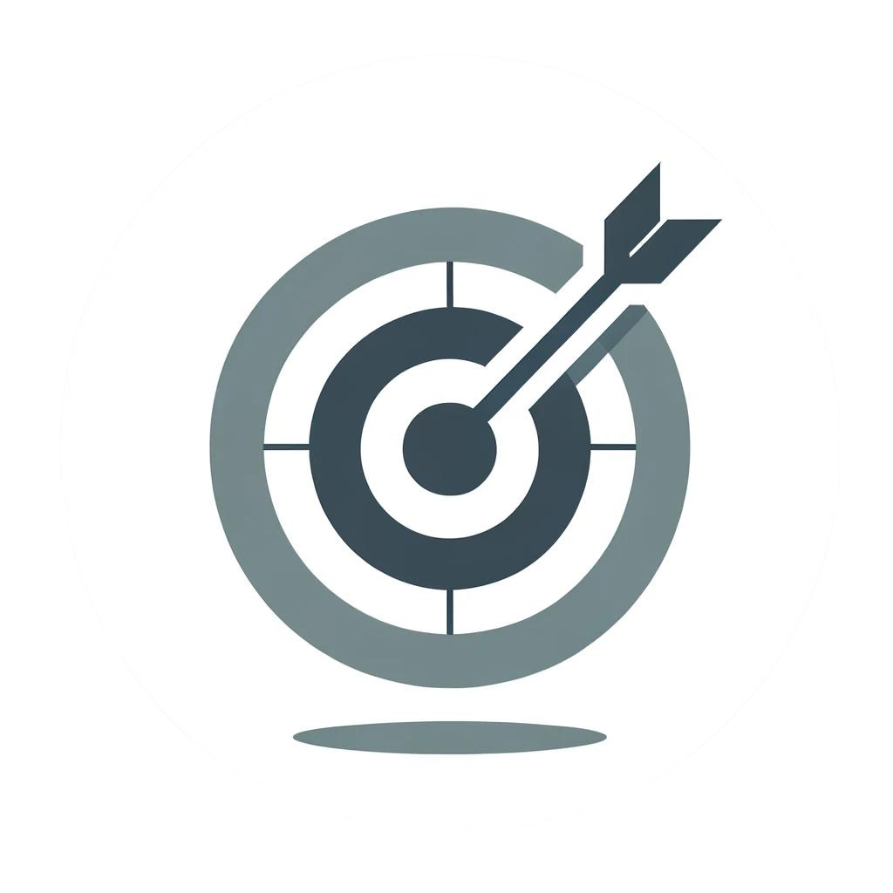

INFORMAÇÕES PESSOAIS
Wellisson Vitor Peizini Dordenoni
Brasileiro, 28 Anos, Casado
Sem filhos
Estrada para Pedra Azul, S/N
Pedra Azul, Aracê - ES
Contato: (27) 99696-8719
E-Mail: wellissonvitor@gmail.com
MINHA JORNADA
Nasci e fui criado em Venda Nova do Imigrante, uma cidade cheia de oportunidades e excelente infraestrutura.
Comecei minha educação em escolas públicas e, um ano após a inauguração do IFES em 2010, passei no exame de admissão e cursei o ensino médio na melhor escola da cidade.
Iniciei minha primeira faculdade em Letras com ênfase em Português em 2017, mas percebi durante o estágio supervisionado que a sala de aula não era para mim.
Durante a pandemia de 2020, fui convidado a ser técnico de informática na escola onde estagiava, ajudando nas aulas a distância e apoiando os pais dos alunos.
Descobri minha paixão por tecnologia, abandonei o curso de Letras e comecei a estudar Análise e Desenvolvimento de Sistemas (ADS), curso que sigo até hoje, com a missão de seguir carreira na área e buscar novos conhecimentos e práticas inovadoras.
OBJETIVOS
Desejo integrar uma equipe dinâmica e inovadora, onde possa crescer pessoal e profissionalmente.
Comprometido com o desenvolvimento moral e social, busco contribuir ativamente para o sucesso da empresa e o desenvolvimento da região.
Estou motivado a aprimorar minhas competências na área de atuação, colaborando de maneira eficaz e positiva com meus colegas de trabalho,
sempre com foco na excelência e na superação de desafios.